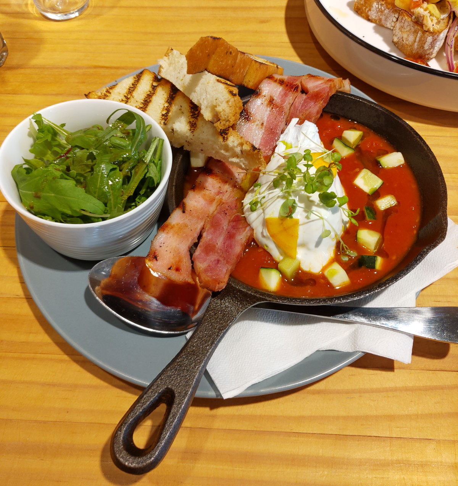

[竹北] 二十四分之一 早午餐 手作麵包
| 餐廳名稱: | 二十四分之一 早午餐 手作麵包 |
|---|---|
| 地 址: | 新竹縣竹北市文興路51號 (興隆國小對面) |
| 營業時間: | 週四~週二 09:00~19:00 |
| 週三公休 | |
| 電 話: | 03 667 3168 |
從FB美食社團發現這間新開的早午餐，看那個描述似乎不錯，今天假日，就來踩雷看看，早餐午餐一起吃。 沒仔細看住址的話，還以為是交大客語學院那邊的文興路，還好及時警覺，是興隆國小這邊的文興路。 到了以後，發現原來是 KES 自在食 Keep Eat Simple 收掉後，新團隊接手原來店面，小改一下裝潢，新成立的早午餐。 開一陣子了，FB 官方網頁已經800人說讚了，不過 Google 了一下，好像我又是第一個報導的。
本來以為開一陣子了，應該有座位，沒想到客滿，先坐吧檯，過了20分鐘，二樓有座位， 才換上來。這家店的官網宣稱 麵包跟咖啡是強項，門口處是有一個大型的烤箱，從烤箱的耐高熱 玻璃看進去，是在烤麵包。吧檯 緊鄰廚房，也有一台大型的專業級的咖啡機。
從吧檯 直接看到廚房，廚師在其中跑來跑去，烹調料理。
一樓沒幾個座位，通常都會安排到二樓，假日吃早午餐的人很多。
二樓往窗外看的景緻。
這是菜單，Google 搜尋結果宣稱是澳式輕食 ，感覺跟美式早餐也差不多， 沒看到牛肉類，豬肉一律是用培根，無炸物。從官網得知 食材選用的很好， 麵包、果醬 都是自製的，很棒。
不在菜單的新菜色，就寫在每桌的小卡片上。還有鹽罐，胡椒罐，可以自行加重口味。
冰摩卡 與 熱拿鐵，覺得咖啡豆用的不錯，冰摩卡甜度蠻夠的，很好喝。 熱拿鐵 不太甜，但整個也是咖啡香，不太苦。
這是兒童餐，但其實是大人點的，因為點菜時，看到隔壁桌的兒童餐，覺得分量那樣就夠了。 炒蛋嫩，一片培根，Bagel 是軟的，莓果果醬是自製的，一點生菜沙拉， 全部都很好吃。頂多炒蛋不夠味的話，自行灑鹽灑胡椒。
蜜桃氣泡飲，很漂亮，底部的果醬也是自製的，加一些水果肉。甜甜的，好喝。
煙燻番茄燉菜佐水波蛋和很厚培根，年輕時候應該是能輕鬆吃完，但是年紀大了，覺得分量有點多。 煙燻番茄燉菜 味道很濃郁，水波蛋中間蛋黃還是液體狀，切開就會流入燉菜， 培根與麵包都有放到鐵條式烤爐用大火烤過，出現鐵條痕。 蠻正常好吃的西式早餐。 
經典鮭魚班尼迪克蛋，上面那個脆脆的細絲 有點特色，增加口感，不錯。 麵包，鋪上鮭魚，鋪上班尼迪克蛋。所謂的班尼迪克蛋，理論上是 英式瑪芬（ English Muffin ），加一些配料，放上一顆水波蛋， 最後淋上荷蘭醬。而荷蘭醬是蛋黃、奶油、檸檬汁或醋、胡椒、鹽所攪拌、混煮而成的一種調味醬汁， 醬汁濃稠滑順。 這邊當然把英式瑪芬，換成自製麵包，用鮭魚 來當配料。也是正常好吃的西式早餐。 看到隔壁桌點的優格，蠻漂亮的，加了很多料，還有煎雞排今天也沒選到，下次來試試。其實既然連 午餐也要經營的話，弄個牛排，由傳統市場買優秀豬排，自己醃，應該也是不錯，大概就是製作餐點 的動線，流程要調整一下。
今日到訪，覺得整體感覺蠻好的，食材用的好，自製項目蠻多的，口味水準也不錯。 從官網得知，是三位年輕人，在別的餐廳工作幾年歷練後，決定創業，今日一試成主顧， 祝福他們能夠長久經營下去。